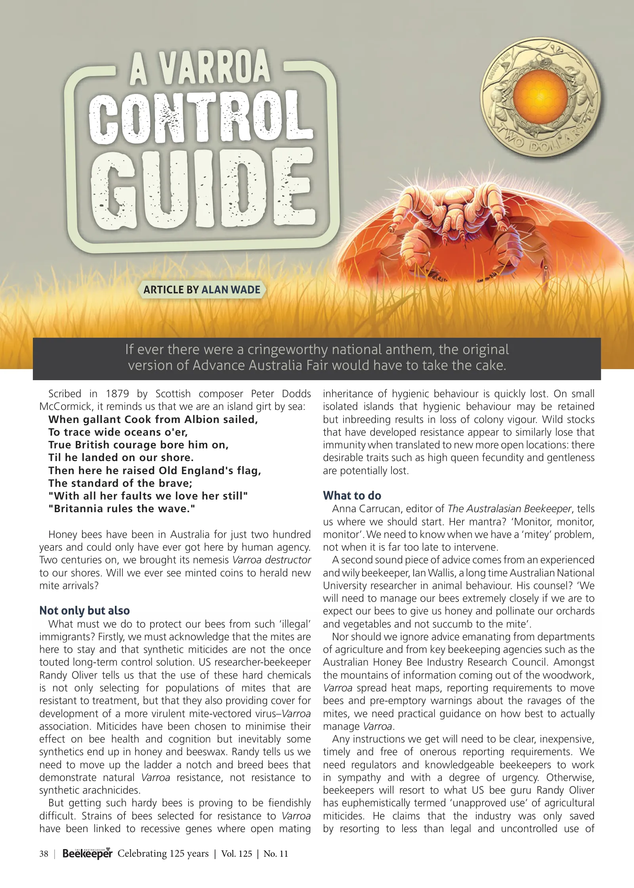

Scribed in 1879 by Scottish composer Peter Dodds
McCormick, it reminds us that we are an island girt by sea:
When gallant Cook from Albion sailed,
To trace wide oceans o'er,
True British courage bore him on,
Til he landed on our shore.
Then here he raised Old England's flag,
The standard of the brave;
"With all her faults we love her still"
"Britannia rules the wave."
Honey bees have been in Australia for just two hundred
years and could only have ever got here by human agency.
Two centuries on, we brought its nemesis Varroa destructor
to our shores. Will we ever see minted coins to herald new
mite arrivals?
Not only but also
What must we do to protect our bees from such ‘illegal’
immigrants? Firstly, we must acknowledge that the mites are
here to stay and that synthetic miticides are not the once
touted long-term control solution. US researcher-beekeeper
Randy Oliver tells us that the use of these hard chemicals
is not only selecting for populations of mites that are
resistant to treatment, but that they also providing cover for
development of a more virulent mite-vectored virus–Varroa
association. Miticides have been chosen to minimise their
effect on bee health and cognition but inevitably some
synthetics end up in honey and beeswax. Randy tells us we
need to move up the ladder a notch and breed bees that
demonstrate natural Varroa resistance, not resistance to
synthetic arachnicides.
But getting such hardy bees is proving to be fiendishly
difficult. Strains of bees selected for resistance to Varroa
have been linked to recessive genes where open mating
If ever there were a cringeworthy national anthem, the original
version of Advance Australia Fair would have to take the cake.
ARTICLE BY ALAN WADE
inheritance of hygienic behaviour is quickly lost. On small
isolated islands that hygienic behaviour may be retained
but inbreeding results in loss of colony vigour. Wild stocks
that have developed resistance appear to similarly lose that
immunity when translated to new more open locations: there
desirable traits such as high queen fecundity and gentleness
are potentially lost.
What to do
Anna Carrucan, editor of The Australasian Beekeeper, tells
us where we should start. Her mantra? ‘Monitor, monitor,
monitor’. We need to know when we have a ‘mitey’ problem,
not when it is far too late to intervene.
A second sound piece of advice comes from an experienced
and wily beekeeper, Ian Wallis, a long time Australian National
University researcher in animal behaviour. His counsel? ‘We
will need to manage our bees extremely closely if we are to
expect our bees to give us honey and pollinate our orchards
and vegetables and not succumb to the mite’.
Nor should we ignore advice emanating from departments
of agriculture and from key beekeeping agencies such as the
Australian Honey Bee Industry Research Council. Amongst
the mountains of information coming out of the woodwork,
Varroa spread heat maps, reporting requirements to move
bees and pre-emptory warnings about the ravages of the
mites, we need practical guidance on how best to actually
manage Varroa.
Any instructions we get will need to be clear, inexpensive,
timely and free of onerous reporting requirements. We
need regulators and knowledgeable beekeepers to work
in sympathy and with a degree of urgency. Otherwise,
beekeepers will resort to what US bee guru Randy Oliver
has euphemistically termed ‘unapproved use’ of agricultural
miticides. He claims that the industry was only saved
by resorting to less than legal and uncontrolled use of
38 |
Celebrating 125 years | Vol. 125 | No. 11